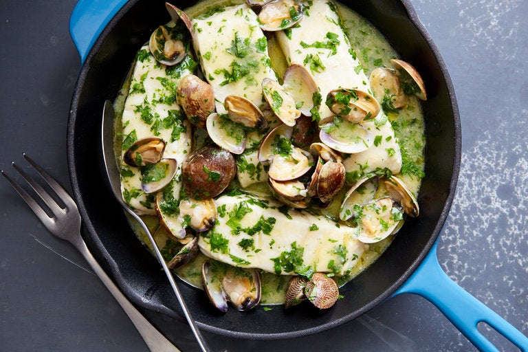

Hake with clams in salsa verde

A classic Basque dish
This Basque classic from Marti Buckley's cookbook “Basque Country: A
Culinary Journey Through a Food Lover's Paradise,” requires a bit of quick
stove work once the clams start to open. You must be sure there is a nice
amount of liquid in the bottom of the pan, enough to swirl around so the
flour coating on the fish and the olive oil can thicken and emulsify the
sauce. And though it's called salsa verde, it's not a dense herbal purée
as in Italian cooking but a fresh, rather sheer parsley-based mixture.
Ingredients
- 20littleneck or manila clams, the smaller the better
-
Bones, head and tail from a 1½ to 2-pound fish, preferably hake, or 1½
cups fish stock
- 4 skin-on hake or halibut fillets, 6 to 7 ounces each
- Kosher or fine sea salt
- ½ cup extra virgin olive oil
- 2 cloves garlic, minced
- 1 tablespoon all-purpose flour
- ½ cup dry, acidic white wine like txacoli or Sancerre
- 1 ½ tablespoons finely chopped flat-leaf parsley leaves
Steps
-
Place clams in a bowl, cover with cold water and set aside. If using
fish trimmings, rinse them with cold water, place in a 3-quart saucepan,
add water to cover and bring to a boil. Reduce heat to low and simmer 20
minutes. Strain the liquid through a fine sieve and discard the solids.
You should have at least 1 cup fish stock, preferably more. Set aside.
-
Drain clams and scrub them. Rinse fish fillets and pat dry. Season with
salt on the skinless side.
-
Heat oil in a large sauté pan or stovetop casserole. Add garlic and cook
on medium-high until garlic barely starts to color. Add flour and cook,
stirring, 30 seconds. Add wine, cook 30 seconds and add fish stock.
Lower heat and simmer about a minute.
-
Add fish to the pan, skin side up. Simmer gently about 3 minutes. Turn
fillets over, add clams, placing them around the fillets. Cook about 5
minutes, or until clams open. If the liquid appears to be drying up, add
some additional fish stock or water. When the clams open, scatter
parsley around the pan.
-
Remove pan from heat and move it in a circular motion a minute or two to
swirl the sauce so it begins to emulsify and look smooth. Add more salt
if needed. Serve directly from the pan or divide among individual
shallow soup bowls.
Go back